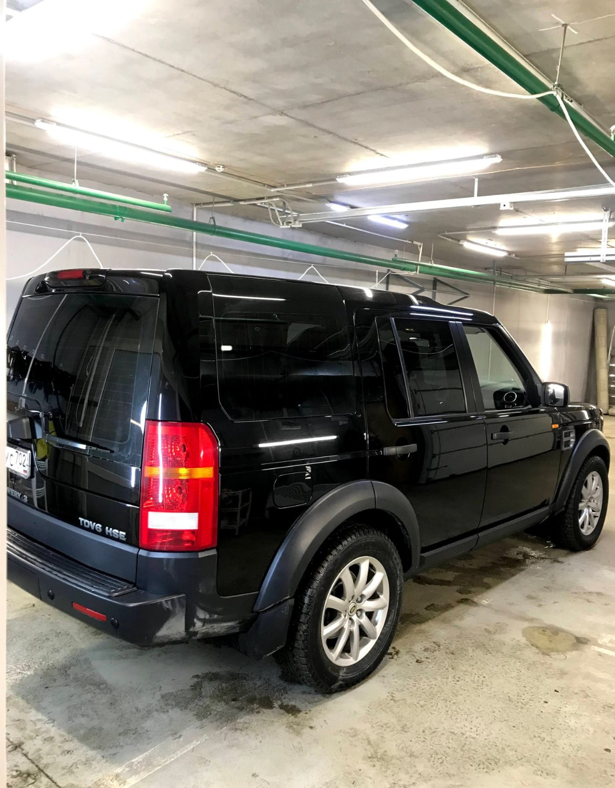

01 · Тонировка
Тонировка автостёкол
Стандартные стёкла и сложные изогнутые — тонируем любые. Мастер заранее покажет, как разные плёнки смотрятся на стекле, и подскажет затемнение.
Задняя полусфераЗадние боковые и заднее стекло — по отзывам, час-полтора
от 2 000 ₽Передние боковыеОколо 20 минут. По закону — от 70% светопропускания
по запросуТонировка в кругВсе стёкла за один визит
по запросуАтермальная плёнкаНа лобовое и передние: салон меньше нагревается на солнце
по запросуСнятие старой тонировкиДемонтаж старой плёнки перед новой
по запросу